Steady States: Finding Balance in a Risky World
1. Introduction
Two people meet at a marketplace. Each arrives with a basket of goods and a private opinion about how much they value what is in it. Nobody manufactures anything new, nobody brings in fresh capital, nobody robs anyone else. They just talk, swap, and walk away. The question this project asks is whether the outcome of those swaps has any structure to it, or whether it is the kind of random mess that emerges whenever real people get involved.
Welfare economics has a striking answer. If both parties are rational and have stable preferences, the set of trades they can plausibly settle on is small, predictable, and in a precise sense efficient. The walk away point is not arbitrary. It sits inside a region called the core, and the core itself contains a smaller object, the competitive equilibrium, which is what a frictionless market would produce if it were given the chance to set prices.
This project is a working laboratory for that result. Every piece of the standard two-agent two-good general equilibrium model is implemented from scratch in MATLAB: the Pareto set, the core, Walrasian prices, the welfare theorems, tâtonnement price discovery, and a Monte Carlo robustness check on convergence. Each section below answers one question.
- Given fixed resources and conflicting tastes, which allocations are efficient?
- Among those efficient allocations, which ones are voluntary?
- Will a price-taking market actually find one of them?
- Does that result hold up if the auctioneer starts from a bad initial guess?
- Can we watch the economy converge in real time?
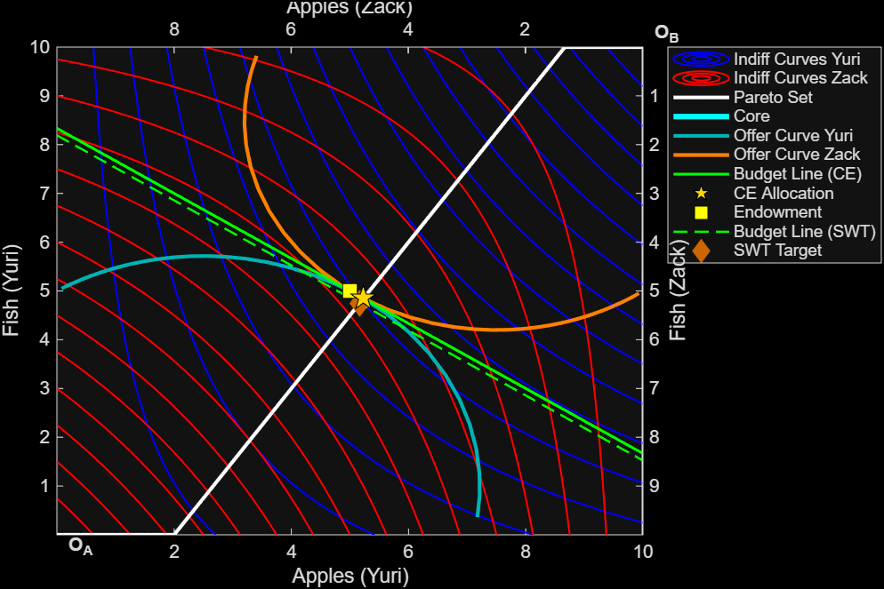
2. The Economic Setup
2.1 Agents, Goods, and Preferences
An agent is anyone with a coherent ranking over baskets of goods. The ranking itself is the primitive object. The utility function \(u_i(x_1, x_2)\) is just a numerical stand-in that respects that ranking: if the agent prefers basket \(A\) to basket \(B\), then \(u_i(A) > u_i(B)\), and any monotone transformation of \(u_i\) preserves the same ordering. Utility numbers are ordinal, not cardinal. Saying that Yuri’s utility went from 40 to 41 carries no information beyond the fact that he is now weakly better off.
The classical assumptions on preferences run as follows. They are complete (the agent can compare any two baskets), transitive (if \(A \succeq B\) and \(B \succeq C\), then \(A \succeq C\)), continuous (small changes in the basket produce small changes in the ranking), and locally non-satiated (in any neighborhood of any basket there is always something the agent strictly prefers). The first three guarantee that a continuous utility function representing the preference exists. The fourth rules out flat regions where the agent is indifferent over a whole patch of allocations. Convexity, when it holds, says the agent prefers averages to extremes, which is what makes interior tangencies into maxima rather than saddle points.
The solver does not assume the preferences are well behaved. It handles four qualitatively distinct cases: smooth quasi-concave utilities (the textbook case), Leontief preferences that have kinks instead of smooth indifference curves, convex preferences (the \(\max\) form, where the agent wants to specialize), and non-quasi-concave preferences where the bordered Hessian flips sign and interior tangencies become minima. Each case requires a different solution technique, which is what most of solveParetoSet.m is about.
The general form, and the running example used throughout:
\[u_\text{Yuri}(x_1, x_2) = x_1(x_2 + 3), \quad u_\text{Zack}(x_1, x_2) = x_1(x_2 + 2)\]
where \(x_1\) = Apples and \(x_2\) = Fish, and each function takes the agent’s own holdings as arguments.
2.2 Endowments and the Edgeworth Box
An endowment is what the agent walks in with. Yuri’s endowment \(\omega_\text{Yuri} = (\omega_{1, \text{Yuri}}, \omega_{2, \text{Yuri}})\) specifies how many units of each good he owns before any trade happens. The economy as a whole is described by the total endowment \(\omega = \omega_\text{Yuri} + \omega_\text{Zack}\). This vector is fixed for the rest of the analysis. No good is produced or destroyed during trade. Whatever Yuri gives up in good 1 must end up in Zack’s basket, and vice versa.
The Edgeworth box turns this conservation law into a picture. Yuri’s holdings are measured from the bottom-left corner \(O_\text{Yuri}\). Zack’s holdings are measured from the top-right corner \(O_\text{Zack}\), with his axes flipped. The width of the box equals the total amount of good 1 in the economy, and the height equals the total amount of good 2. Pick any interior point of the box, project it onto each pair of axes, and you have read off both agents’ allocations simultaneously. Every interior point is a feasible allocation by construction.
Both agents begin with equal endowments: \(\omega_\text{Yuri} = \omega_\text{Zack} = (5, 5)\), giving a total endowment of \(\omega = (10, 10)\).
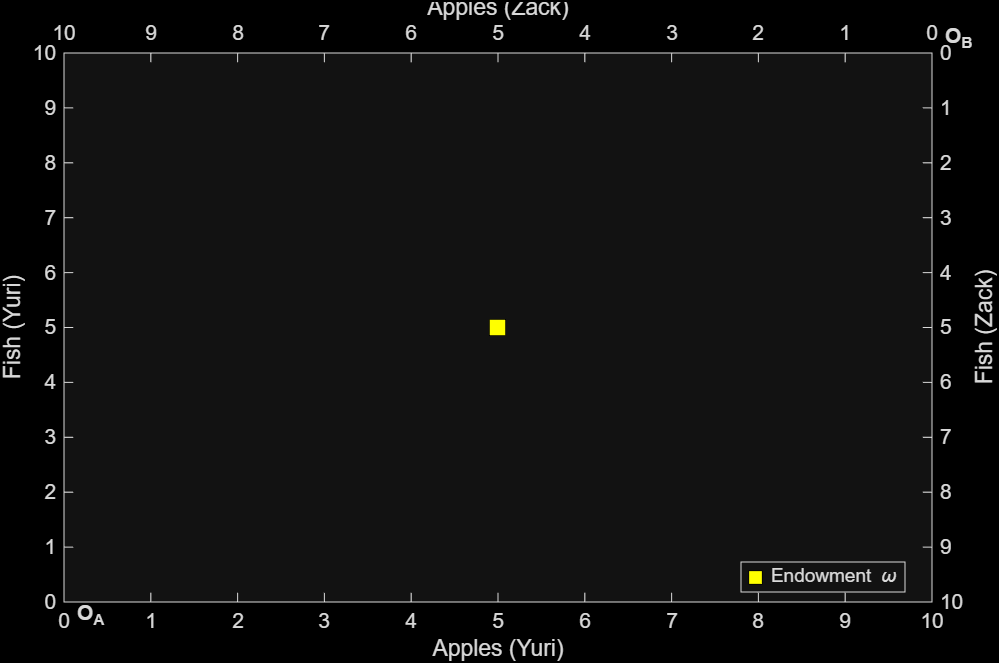
Every interior point of the box is a complete allocation of all goods. No resources are wasted.
2.3 The Marginal Rate of Substitution
The MRS is the slope of an indifference curve, measuring the rate at which an agent will substitute one good for another:
\[MRS = \frac{MU(x_1)}{MU(x_2)}\]
For the running example:
\[MRS_\text{Yuri} = \frac{x_2 + 3}{x_1}, \quad MRS_\text{Zack} = \frac{x_2 + 2}{x_1}\]
The MRS measures how much of good 2 the agent will accept in exchange for giving up one marginal unit of good 1, while keeping their own utility constant. It is the willingness to trade, expressed as a price the agent has in their head. When two agents stand at an allocation and discover that their internal exchange rates disagree, there is a deal to be made. One of them values good 1 relatively more, and the other values good 2 relatively more, so a swap that moves a little of each in the right direction makes both better off. Trade dies out when the rates equalize, because at that point no swap can improve one party without hurting the other.
3. Pareto Optimality
3.1 The Concept
An allocation is Pareto optimal when no reshuffling of the goods makes one agent strictly better off without making the other worse off. The bar is deliberately low. Pareto optimality says nothing about fairness, equality, or whether the allocation is one anybody would actually agree to. It only rules out the cases where free utility is being left on the table.
Geometrically, the condition translates into tangency. Each agent’s indifference curves slice through the box. At a Pareto optimum, the curve through that point for agent 1 is tangent to the curve through that point for agent 2. If the curves crossed instead of touching, there would be a lens-shaped region between them, and any point inside that lens would dominate the original allocation for both agents. Tangency closes the lens.
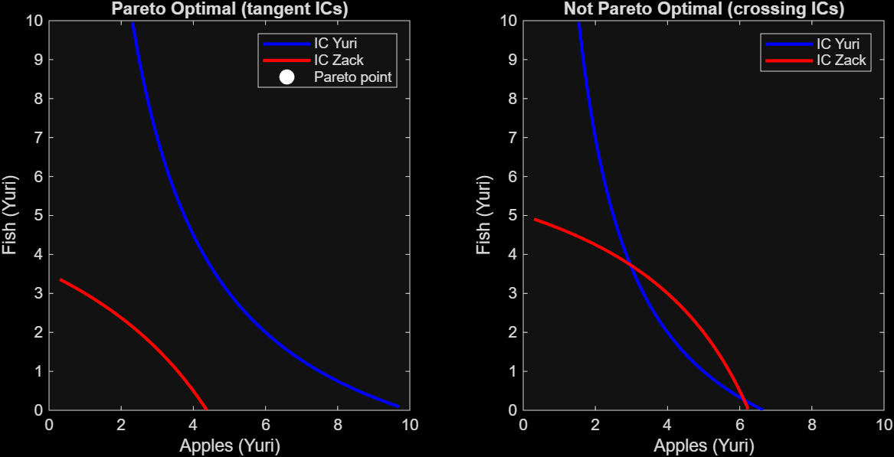
3.2 The MRS Condition
A Pareto optimal allocation satisfies:
\[\text{MRS}_\text{Yuri}(x_1, x_2) = \text{MRS}_\text{Zack}(\omega_1 - x_1,\ \omega_2 - x_2)\]
The tangency condition is what equalizes the marginal rates of substitution. If the slopes of the two indifference curves match, the agents agree on the local exchange rate, and no further trade is mutually beneficial. If they disagree, the agent with the higher MRS values good 1 more at the margin, so a transfer of good 1 from the other agent in exchange for good 2 makes both better off. Pareto optimality is the absence of any such opportunity.
The substitution \(u_2(\omega_1 - x_1, \omega_2 - x_2)\) writes Zack’s utility in terms of Yuri’s holdings. This is the central trick that lets the whole problem live in one coordinate system. Once it is done, every allocation is a single point \((x_1, x_2)\) in Yuri’s frame, and Zack’s bundle is recovered automatically as \((\omega_1 - x_1, \omega_2 - x_2)\).
3.3 Special Preference Cases
The solver handles four distinct preference structures, each producing a qualitatively different Pareto set:
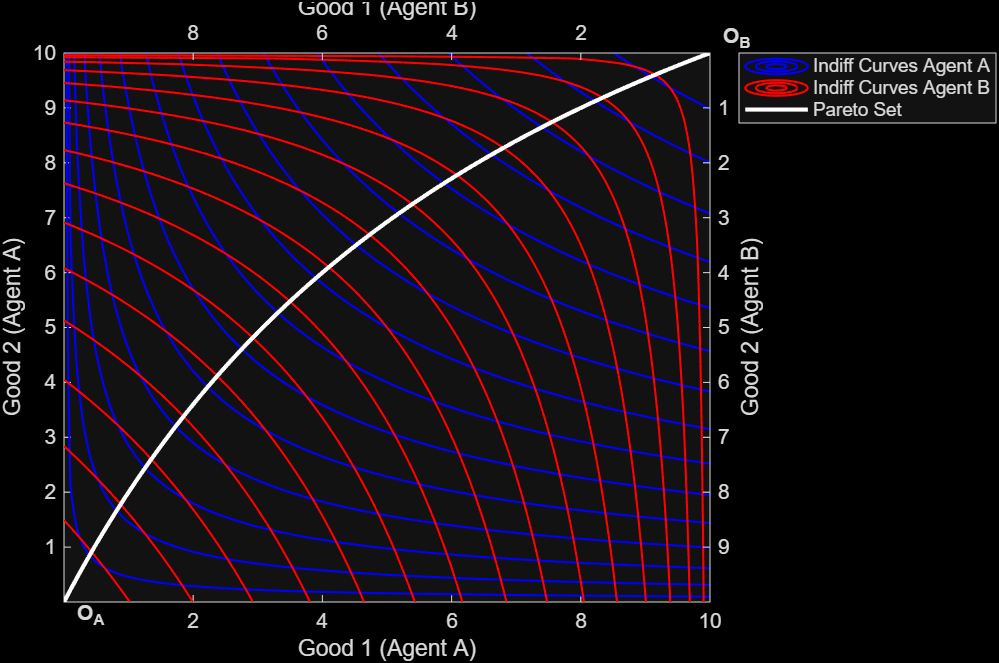
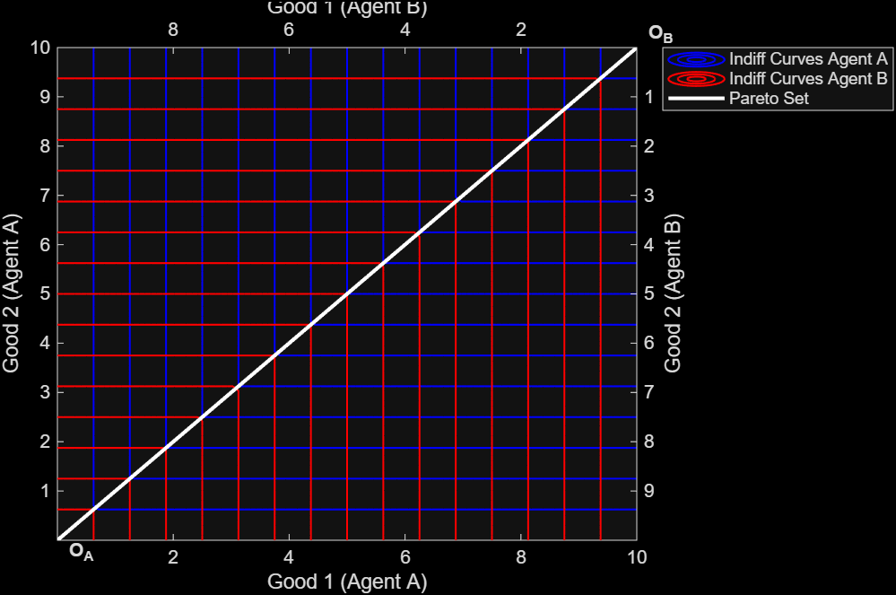
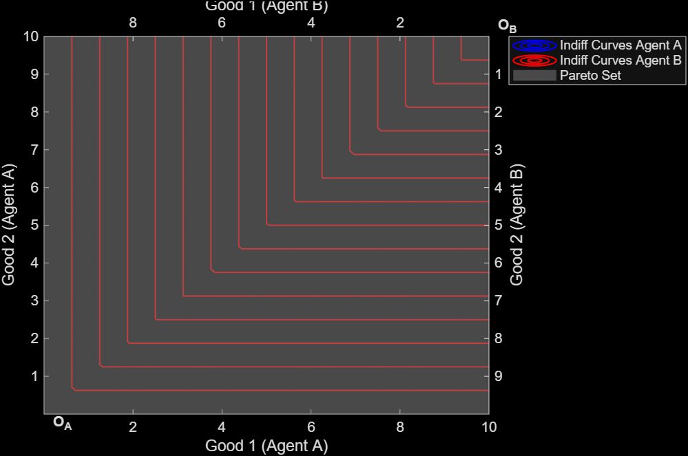
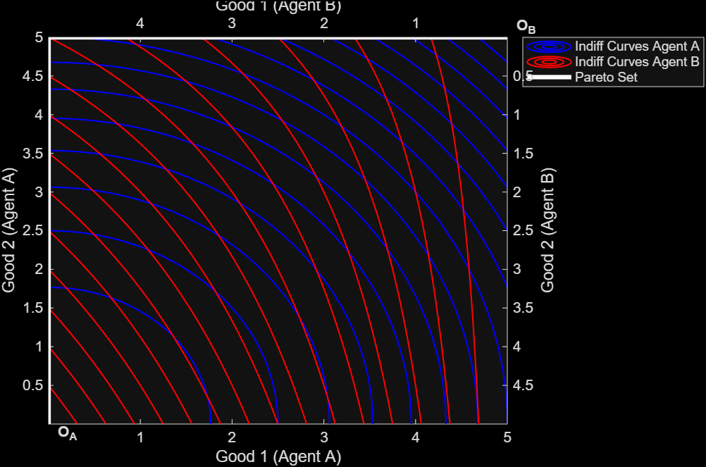
3.4 The Solver Decision Tree
The dispatcher in solveParetoSet.m picks the right solution path before any heavy computation begins. The branches go in this order. First, are both utilities differentiable? If either contains a \(\min\) or \(\max\), control passes to paretoNonDiff, which handles kinked preferences directly without taking derivatives. Second, if both are differentiable, are any of the marginal utilities zero or infinite at the test point? A zero marginal utility means the agent is neutral to that good, and the Pareto set collapses to an edge of the box. Third, is the MRS constant on each side? Constant MRS is the perfect substitutes case. The Pareto set then depends on which agent has the higher constant rate, and it is either the entire box (equal rates) or two adjacent edges. Fourth, is the bordered Hessian negative at the midpoint of the box? A negative determinant signals non-quasi-concave preferences, where any interior tangency identified by the first-order conditions is a utility minimum rather than a maximum. In that case, the true Pareto-efficient allocations all lie on the boundary, and we hand off to paretoBoundary. Only if all four checks pass does the solver run the standard interior-plus-corner pipeline.
% solveParetoSet.m -- top-level dispatch (abridged)
if mrs.diff1 && mrs.diff2
% neutral good edge cases: pareto set collapses to a point or an edge
if mrs.MRS1_zero && mrs.MRS2_inf, px1 = 0; px2 = omega(2); return
elseif mrs.MRS1_inf && mrs.MRS2_zero, px1 = omega(1); px2 = 0; return
elseif mrs.MRS1_zero || mrs.MRS1_inf || mrs.MRS2_zero || mrs.MRS2_inf
% single-agent neutrality: route to the appropriate edge
end
% perfect substitutes: constant MRS on both sides
if mrs.constant_MRS1 && mrs.constant_MRS2, ...; return, end
% bordered hessian test: negative det means non-quasi-concave
if flags.convex_pref
[px1, px2] = paretoBoundary(u1, u2_sub, omega, x1_range, x2_range);
return
end
% standard case: interior tangency + corner solutions
[int_x1, int_x2] = paretoInterior(mrs.MRS1, mrs.MRS2_linked, omega, ...);
[cor_x1, cor_x2] = paretoCorners (mrs.MRS1, mrs.MRS2_linked, omega, ...);
[px1, px2] = paretoFilter([int_x1, cor_x1], [int_x2, cor_x2], ...);
else % at least one utility non-differentiable (min or max)
[px1, px2, flags] = paretoNonDiff(u1, u2_sub, omega, x1_range);
endparetoBoundary does what no closed-form method can do for non-quasi-concave preferences. It walks all four edges of the Edgeworth box, evaluates both utilities on a \(100 \times 100\) grid of feasible interior points, and asks for each boundary candidate whether any other feasible point dominates it. A candidate survives only if no other allocation makes both agents weakly better off with at least one strict improvement. The dominance test, written in vectorized form, falls out of the formal definition of Pareto dominance:
% paretoBoundary.m -- inner dominance check
% u1g, u2g are flattened utility values across the full feasible grid;
% (u1_b, u2_b) is the candidate boundary point under test.
dominated = any( (u1g >= u1_b - tol) & (u2g >= u2_b - tol) & ...
(u1g > u1_b + tol | u2g > u2_b + tol) );
eff(k) = ~dominated;The grid step also guards against domain failures. Utilities like \(\log(x_1 - 3)\) produce complex values on part of the box, and the imag(val) ~= 0 filter excludes those points from the dominance check rather than silently treating them as \(-\infty\).
3.5 Results
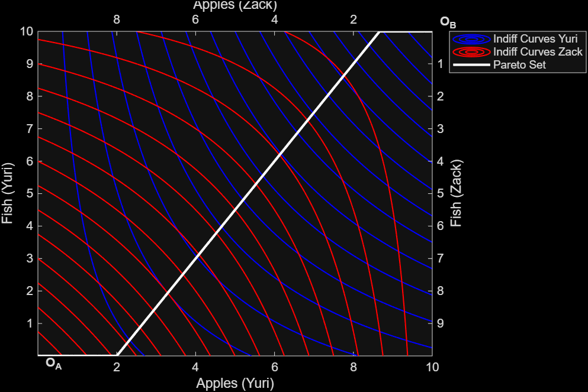
The contract curve spans the entire box because both agents share the same utility structure. The MRS condition yields allocations along the full diagonal:
| Agent | Good | Min | Max |
|---|---|---|---|
| Yuri | Apples | 0 | 10 |
| Yuri | Fish | 0 | 10 |
| Zack | Apples | 0 | 10 |
| Zack | Fish | 0 | 10 |
The contract curve is the locus of all deals both agents could agree are efficient, but it says nothing about which one they would actually choose.
4. The Core
4.1 Individual Rationality
Pareto optimality alone is too permissive. The corner of the Edgeworth box where one agent owns everything and the other owns nothing is Pareto optimal. There is no way to give the loser anything without taking it from the winner. But no rational agent voluntarily walks into that corner if they started with a balanced endowment. The endowment itself is an outside option. Any deal worth making has to clear the bar of being preferred to the status quo by both parties.
An allocation is individually rational if neither agent prefers their endowment to the proposed deal:
\[u_\text{Yuri}(x_1, x_2) \geq u_\text{Yuri}(5, 5) = 40\]
\[u_\text{Zack}(x_1, x_2) \geq u_\text{Zack}(5, 5) = 35\]
4.2 The Core
The core is the intersection of the Pareto set with the individually rational region:
\[\text{Core} = \text{Pareto set} \cap \{x : u_i(x) \geq u_i(\omega_i)\ \forall i\}\]
Geometrically, draw the indifference curve through the endowment for each agent. Yuri prefers anything to the upper right of his curve; Zack prefers anything to the lower left of his (in Yuri’s frame). The intersection of the two preferred regions forms a lens around the endowment, which is the set of all allocations both agents would weakly accept. The core is what remains when this lens is intersected with the contract curve.
The core contains every allocation that is simultaneously efficient and voluntarily acceptable. Neither agent would prefer to walk away.
4.3 Results
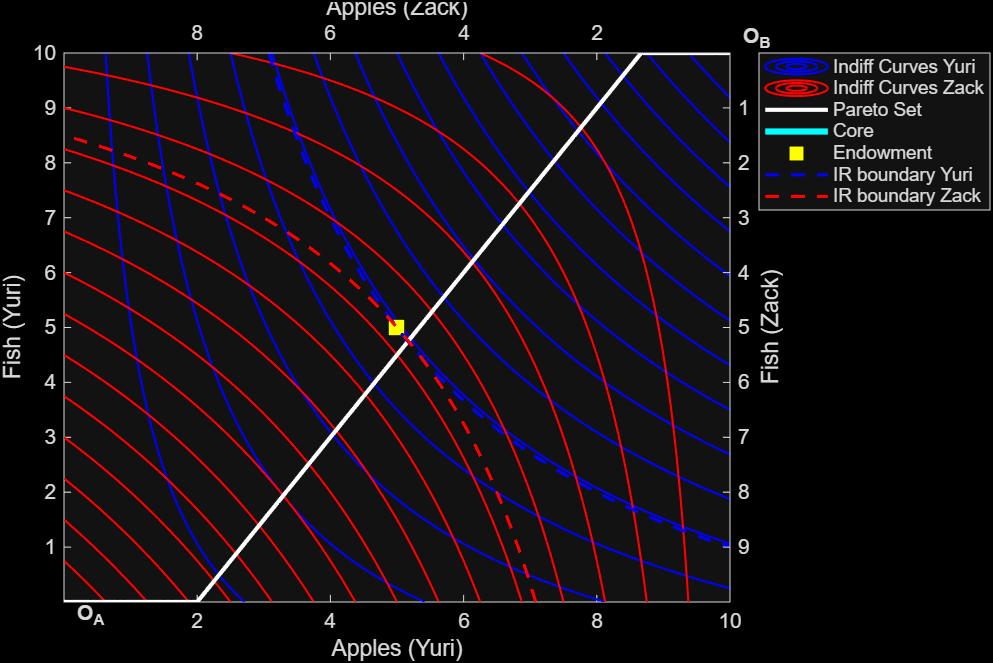
In the running example the core collapses to a single point, a degenerate case where the two IR constraints intersect the contract curve at the same allocation:
| Apples | Fish | |
|---|---|---|
| Endowment (both agents) | 5.000 | 5.000 |
| IR threshold, Yuri | \(u \geq 40\) | |
| IR threshold, Zack | \(u \geq 35\) | |
| Core allocation, Yuri | 5.165 | 4.747 |
| Core allocation, Zack | 4.835 | 5.253 |
Two corner cases are worth flagging. When the IR constraints are tight enough that the lens collapses around a single point on the contract curve, the core is a singleton. When preferences are perfectly aligned (both agents share the same utility, or both have perfect substitutes with the same MRS), the contract curve fills the entire box and the core fills the entire IR lens. The solver detects both cases through cflags.core_is_region and cflags.core_empty, then routes to either a curve plot, a shaded region plot, or an empty-core warning.
5. Competitive Equilibrium
5.1 The Walrasian Setup
Price normalization: \(p_1 = 1\), find \(p_2^*\).
Each agent sells their endowment at market prices and buys their preferred bundle subject to:
\[p_1 x_1 + p_2 x_2 = p_1 \omega_{i,1} + p_2 \omega_{i,2}\]
Market clearing requires \(d_\text{Yuri}(p_2) + d_\text{Zack}(p_2) = \omega\), which holds by Walras’ Law once good 1 clears.
5.2 Deriving Demand
The utility maximization problem uses the Lagrangian. The first-order conditions yield:
\[\frac{MU(x_1)}{MU(x_2)} = \frac{p_1}{p_2}\]
combined with the binding budget constraint.
From an engineering standpoint, the slow part of computing demand is the symbolic algebra: setting up the Lagrangian, solving the first-order conditions, and substituting in numeric prices. Doing this once per price quote inside a Monte Carlo loop is unworkable. makeDemandFn.m solves the symbolic system one time at the moment the agent is first defined, then converts the resulting expressions through matlabFunction into a vectorized handle of the form \(\hat{d}(p_2)\). Every later evaluation, whether for a single tâtonnement step or for an offer curve traced over 80 price points, is a numeric function call with no symbolic work involved. The same factory dispatches into specialized code paths for perfect substitutes (corner comparison), neutral goods (closed form), Leontief preferences (kink condition solved at the corner of the L-shaped indifference curve), and convex preferences (utility comparison at the two budget-line corners). The fallback fmincon path exists for genuinely intractable utilities but rarely fires.
For the running example, with \(u_\text{Yuri}(x_1, x_2) = x_1(x_2 + 3)\) and budget \(m_\text{Yuri} = 5 + 5 p_2\), the symbolic derivation gives:
\[d_\text{Yuri}(p_2) = \left( \frac{m_\text{Yuri} + 3 p_2}{2}, \quad \frac{m_\text{Yuri} - 3 p_2}{2 p_2} \right)\]
% inside makeDemandFn.m: solve the FOC + budget once, then vectorize
sol = solve([MRS == p2_s, x1 + p2_s*x2 == bud_s], [x1, x2]);
d1_fn = matlabFunction(sol.x1, 'Vars', {p2_s});
d2_fn = matlabFunction(sol.x2, 'Vars', {p2_s});
d_fn = @(p2) clip_demand(d1_fn(p2(:)'), d2_fn(p2(:)'), omega);The clip_demand step replaces out-of-box or complex-valued outputs with NaN. This matters when log or square-root utilities push demand outside the feasible region for some prices, and when downstream code wants to skip those points rather than crash.
5.3 Finding Equilibrium
solveEquilibrium.m first attempts a symbolic solve. It builds the excess demand expression \(z(p_2) = d_{\text{Yuri},1}(p_2) + d_{\text{Zack},1}(p_2) - \omega_1\) in symbolic form and feeds it to MATLAB’s solve. When the resulting equation has a closed-form root (which is the case for all the standard textbook utilities) this returns the exact equilibrium price, often as a rational number. When it does not (transcendental utilities, or systems where solve returns no closed-form), the function falls back to fzero from a small set of starting prices spaced over several orders of magnitude. The two paths together cover every utility the project handles. Roots are filtered to keep only those that are real, positive, and within tolerance, in case the symbolic solver returns a complex or negative branch.
The market clears where excess demand \(z(p_2) = d_{\text{Yuri},1}(p_2) + d_{\text{Zack},1}(p_2) - \omega_1 = 0\):
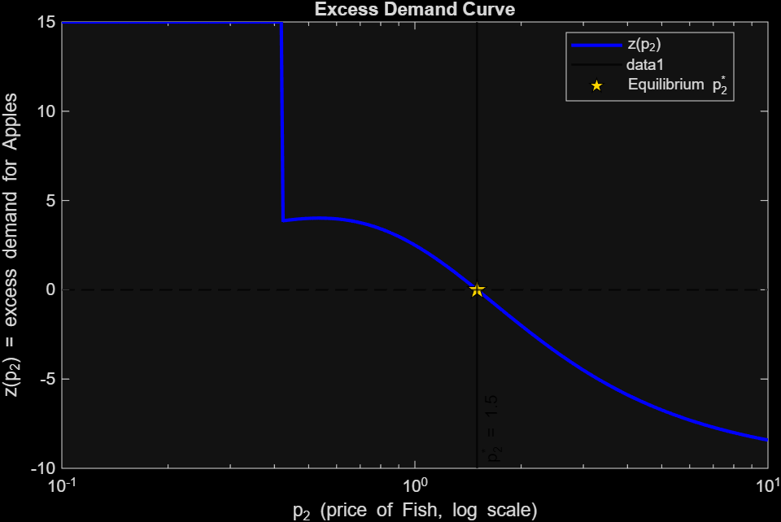
5.4 Offer Curves and the Box
An offer curve is the trace of an agent’s demand as the relative price varies, holding everything else fixed. For each value of \(p_2\), the agent solves their utility maximization problem against the budget line \(p_1 x_1 + p_2 x_2 = p_1 \omega_{i,1} + p_2 \omega_{i,2}\), and the resulting bundle is one point on the curve. As \(p_2\) sweeps from low to high, the budget line rotates around the endowment, and the demanded bundle moves with it. The curve always passes through the endowment itself, since the agent has the option of not trading. Walras’ equilibrium is the price at which both offer curves intersect at a point other than the endowment, and that intersection is the only allocation where every agent’s demand simultaneously clears the market.
5.5 Welfare Theorems
Equilibrium price: \(p_1 = 1,\quad p_2^* = 1.5\)
| Agent | Apples | Fish | \(u_\text{CE}\) | \(u_\text{endow}\) | Gain |
|---|---|---|---|---|---|
| Yuri | 5.231 | 4.846 | 41.04 | 40.00 | +1.04 |
| Zack | 4.769 | 5.154 | 34.12 | 35.00 | -0.88 |
Zack’s gain from trade is negative. The CE is Pareto optimal (FWT holds), but it lies outside the core. Zack ends up worse off than at his endowment. This is why the core is a stricter concept than Pareto optimality alone, and why the SWT matters.
First Welfare Theorem (FWT): CE is on the Pareto set. The market does not waste resources. ✓
Second Welfare Theorem (SWT): a lump-sum tax of \(0.21\) on Yuri shifts the budget line to support the core allocation \((5.165,\ 4.747)\) as a CE at the same price \(p_2^* = 1.5\). Equity and efficiency can be separated. ✓
The welfare theorems rest on three assumptions, and each one breaks for known reasons. Quasiconcavity guarantees that demand is well-defined as a single bundle rather than a tie between corners; without it, the agent might switch discontinuously between specializing in one good and the other, and the offer curve develops a jump. Continuity of preferences rules out lexicographic orderings, where the agent would die before giving up any of good 1 for any amount of good 2. Local non-satiation says there is always more utility to be had nearby, which is what forces the agent to spend their entire budget rather than leave income on the table. The first assumption fails for non-quasi-concave preferences (test case 2 in the appendix), and the SWT note in the code explicitly flags this. The second is more of a theoretical concern than a practical one. The third holds for almost any utility a textbook would write down. None of the three are unreasonable for a small economy of two patient agents, but all three matter the moment one tries to extend the model to financial markets, durable goods, or behavioral preferences.
6. Simulations: How the Market Converges
6.1 The Tâtonnement Process
In Walras’ original telling there is no actual market, just an auctioneer. The auctioneer announces a price vector, agents submit their demands, and the auctioneer reads off whether the market clears. If good 1 is in excess demand the auctioneer raises its price; if it is in excess supply the auctioneer lowers it. No transactions occur until prices have settled, at which point everyone trades simultaneously at the cleared price. The point of the story is not that real markets work this way (they obviously do not), but that under reasonable conditions the price adjustment process actually converges to the equilibrium computed analytically.
The price update rule uses a multiplicative form to keep prices strictly positive:
\[p_{t+1} = p_t \cdot \exp(\lambda \cdot z(p_t))\]
In code, this is one line inside the iteration loop, with a small floor to absorb numerical noise:
% runTatonnement.m -- the inner loop
for t = 1:n_iter
d_A = dFn_A(p); d_B = dFn_B(p);
z = d_A(1) + d_B(1) - omega(1); % good 1 excess demand
if abs(z) < tol, break, end
p = max(1e-9, p * exp(lambda * z));
endThe max(1e-9, ...) floor matters in early iterations when an extreme starting price produces a large negative excess demand. Without it, \(p \cdot \exp(\lambda z)\) can underflow to zero or even round negative, after which the budget constraint \(p_1 x_1 + p_2 x_2 = m\) stops making economic sense. The step size \(\lambda\) controls how aggressively prices respond to excess demand. Set it too low and convergence takes thousands of iterations. Set it too high and the price overshoots, oscillates, and may never settle. The default \(\lambda = 0.05\) was tuned empirically across the 13 test cases. The tolerance is the threshold below which excess demand is treated as zero, set to \(10^{-6}\). The maximum iteration count caps any non-converging run at 300 steps, after which the function returns its last state with converged = false.
6.2 A Single Trial
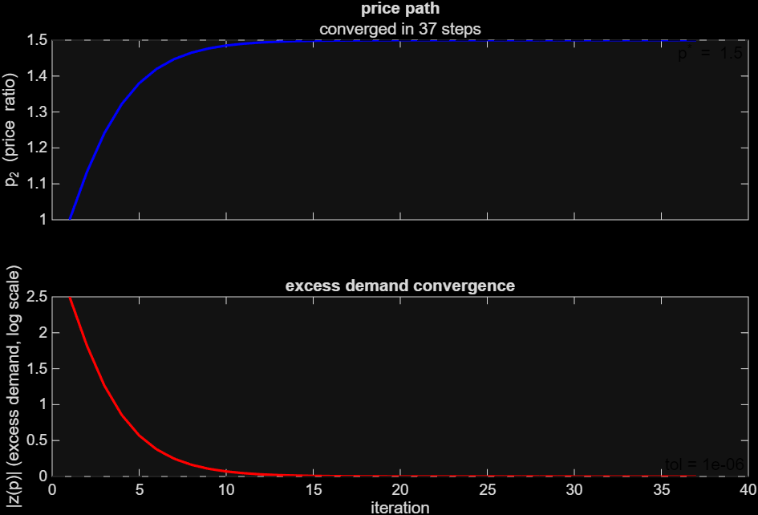
Convergence shows up in the log-scale plot as a roughly linear descent of \(|z(p_t)|\), which is the signature of geometric convergence. When \(\lambda\) is too large for the local curvature of the excess demand function, the price overshoots and the log plot starts to oscillate or stall. When the demand function has a domain restriction (a square root or log of a quantity that goes negative for some prices), the trace can hit a NaN and stop early. Both failure modes were seen during testing and informed the choice of step size.
6.3 Monte Carlo: Many Starting Prices
A single converging run shows that tâtonnement works from one starting price. It says nothing about whether the equilibrium is robust. To check global stability, the function runMonteCarlo.m sweeps 80 starting prices spaced over four orders of magnitude on a log grid, runs the full tâtonnement from each, and records whether the trace converges and where it lands. The log spacing matters because the natural failure mode for price discovery is multiplicative drift: a starting price that is 100 times the equilibrium is qualitatively similar to one that is \(1/100\) of it, and a uniform grid would over-sample the middle.
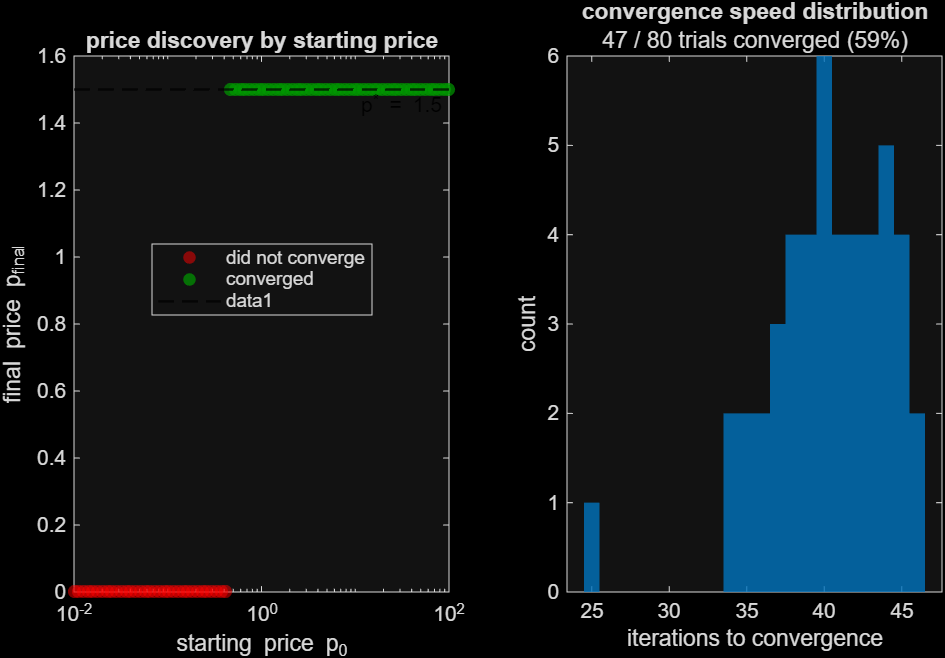
If the market converges to the same price regardless of where it starts, the equilibrium is globally stable. The economy finds its way there no matter how chaotic the initial conditions.
7. Visualization
7.1 The 2x2 Figure
The animation runs in a single figure split into four panels that update together. The top-left panel is the 3D Edgeworth box with two cylinders standing on it, one for each agent. The cylinder positions reflect the current allocation, and a trail line behind each cylinder traces the path through allocation space from the endowment to the most recent step. The top-right panel is a grouped bar chart showing each agent’s current holdings of each good, which is what changes most visibly during trade. The bottom-left panel plots welfare over time, with two horizontal reference lines marking the endowment utility for each agent. Both lines should rise (or stay flat) and never cross below the reference. The bottom-right panel plots \(p_t\) against \(t\) on a log scale, with the equilibrium price marked as a dashed line.
All four panels are driven by the same underlying iteration index. On each frame the rendering loop reads off the price, allocation, and utility at step \(t\) from the precomputed tâtonnement trace, then pushes a single update to each panel. Recomputing utilities symbolically inside the animation loop would be unworkably slow, so they are evaluated once into u1_path and u2_path before any frame is drawn.
7.2 The Three Cylinder Styles
Height = \(x_1 + x_2\); color = agent identity.
Watch the cylinders drift across the floor of the box as trade reallocates the goods. Each cylinder ends up at the competitive equilibrium allocation, with its position projected on the grid below.
Height = normalized utility; cylinders grow taller as agents gain welfare.
Both cylinders should grow upward over time. Since the FWT guarantees the equilibrium is Pareto optimal and lies above each agent’s IR threshold, neither agent ends up shorter than they started. The visual confirmation is that no cylinder ever shrinks during the run.
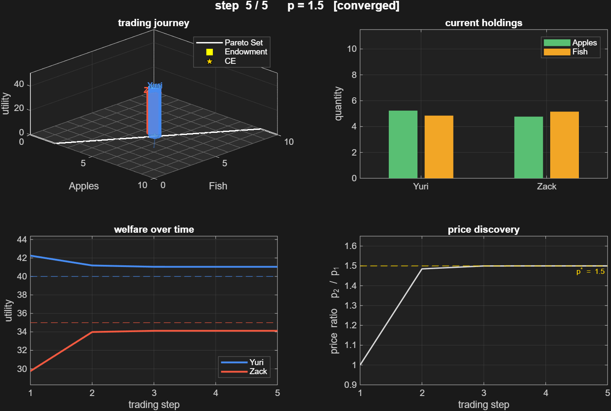
Green band = Apples held; amber band = Fish held.
The composition of each cylinder shows what each agent is trading away and receiving. Yuri values apples relative to fish slightly more than Zack does (\(\text{MRS}_\text{Yuri} = 1.6 > 1.4 = \text{MRS}_\text{Zack}\) at the endowment), so he gives up some fish in exchange for apples. His amber band shrinks while his green band grows. Zack’s bands move in the opposite direction. Total height stays close to constant in the running example, since agents trade roughly one for one.
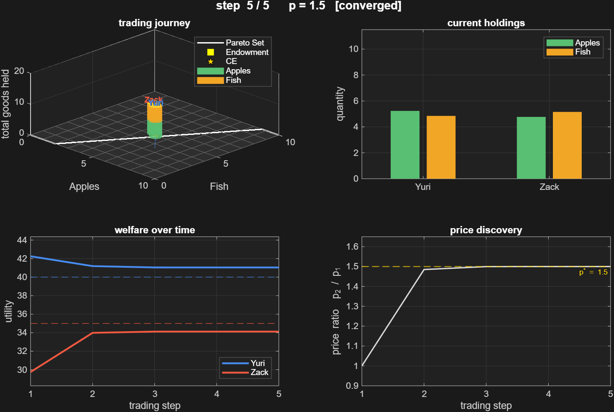
7.3 Reading the Animation
A few static elements anchor the animation regardless of step. The Pareto set is drawn in white on the floor of the box, since the trading path is supposed to terminate on it. The competitive equilibrium allocation is marked by a gold star at the same height. The endowment is a yellow square at the start point. Trail lines following each cylinder show the path through allocation space, and they should curve toward the gold star as iterations progress. Each cylinder carries a floating name label above it (blue for the first agent, red for the second) so the agents are visually distinguishable even when their cylinders are similar in size.
8. Technical Architecture
8.1 The State Chain
Each section function accepts an optional 'from' argument carrying all upstream results, so the pipeline reuses computation instead of rerunning it:
s = paretoSet(u1, u2, omega);
s = core(u1, u2, w1, w2, 'from', s);
s = walrasian(u1, u2, w1, w2, 'from', s);
s = sims(u1, u2, w1, w2, 'from', s);
s = viz(u1, u2, w1, w2, 'from', s, 'style', 'stacked');Each call extends the struct s with new fields:
| Section | Fields added to s |
|---|---|
paretoSet |
px1, px2, flags, mrs, X1, X2, Z_U1, Z_U2 |
core |
ir, cx1, cx2, cflags, w1, w2 |
walrasian |
p_eq, x_A, x_B, oc_A, oc_B, fwt, swt |
sims |
tatonn, mc, p_eq_ref |
viz |
tatonn (reused), mc_viz |
The mechanism is a single arguments block at the top of each section function. Optional state from upstream comes in as options.from, and the function checks whether each field is already populated before recomputing it. The pattern is the same in every section:
function s = walrasian(u1, u2, w1, w2, options)
arguments
u1
u2
w1 (1,2) {mustBeNumeric}
w2 (1,2) {mustBeNumeric}
options.p0 (1,1) double = 1.0 % initial price guess
options.target (1,2) double = [NaN NaN] % SWT target allocation
options.from struct = struct()
end
% reuse pareto set if it was computed upstream, otherwise compute it now
if isfield(options.from, 'px1')
px1 = options.from.px1; px2 = options.from.px2;
flags = options.from.flags; mrs = options.from.mrs;
else
[px1, px2, flags] = solveParetoSet(u1, u2, u2_sub, mrs, omega, ...);
end
% ... walrasian-specific work ...
s = options.from; % carry forward upstream state
s.p_eq = p_eq; s.x_A = x_A; s.x_B = x_B; % append new fields
endTwo things make this work cleanly. First, arguments blocks give every parameter a default value, so any downstream call that omits a field just gets a fresh struct() and computes from scratch. Second, the convention of returning s = options.from; s.new_field = ... means each section is composable in any order. Running walrasian standalone with no upstream state produces the same result as running it after paretoSet and core, just slower.
8.2 Key Engineering Decisions
A few choices ended up mattering more than the rest.
Symbolic then numeric. The first instinct when implementing demand was to call solve inside every price loop. This works for unit tests but melts under any serious workload. Doing the symbolic algebra once at agent definition time, exporting the result through matlabFunction, and then evaluating numerically across a vector of prices is roughly 10,000 times faster than the per-call symbolic route on the Monte Carlo sweep, and it produces identical answers to within numerical tolerance.
matlabFunction versus subs in a loop. Related to the above, but distinct. subs(expr, vars, values) is a symbolic substitution that returns a symbolic value and forces a double conversion at the end. matlabFunction(expr) compiles the expression into a native MATLAB function handle on first call. For grids of \(10^4\) points, the subs route takes minutes; the matlabFunction route takes milliseconds.
imag(val) ~= 0 checks. A common bug in numeric economics code is that ~isfinite(val) only catches NaN and Inf, not complex values. A utility like \(\log(x_1 - 3)\) returns a perfectly finite complex number on part of the domain, which then propagates silently into the next step and produces nonsense. The dominance check in paretoBoundary and the clipping in makeDemandFn both check imag(val) ~= 0 explicitly to catch this case, treating any complex output as a domain failure.
Non-blocking animation. The trading animation uses drawnow limitrate rather than drawnow, which lets MATLAB skip frames if the rendering can’t keep up. It also updates existing graphics objects in place using their XData and YData properties, rather than deleting and redrawing. Building a fresh figure on every frame is the easiest thing to write and the worst thing to run; it triggers a full re-layout of axes, legends, and decorations on every iteration. Updating in place keeps the frame rate fast enough that the animation actually feels like a process rather than a slideshow.
9. Limitations and Extensions
9.1 Current Limitations
- Static endowment economy: no production, no capital accumulation.
- Two agents, two goods: the Edgeworth box geometry does not generalize beyond this.
- Price-taking assumption: agents have no market power.
9.2 Natural Extensions
- \(n\)-agent tâtonnement: aggregate excess demand across \(n\) agents with the same update rule.
- Overlapping generations: agents trade across time periods.
- Network trade: bilateral trades along a graph instead of through a centralized auctioneer.
10. Conclusion
The five questions opened this writeup; the project answers them one by one. Which allocations are efficient? The Pareto set, computed by tangency for smooth utilities and by grid dominance for non-quasi-concave or kinked ones. Which efficient allocations are voluntary? The core, which is the segment of the Pareto set that survives the individual rationality constraint. Will a price-taking market find one of them? Yes, by the First Welfare Theorem, though not necessarily a core allocation. Does the result hold from a bad initial guess? Yes, on every test case run; the Monte Carlo sweep across four orders of magnitude in starting price always converges to the same equilibrium for the running example. Can we watch the economy converge in real time? Yes, the trading animation drives all four panels off a single tâtonnement trace.
The result that surprised me most during implementation was how easy it is for the competitive equilibrium to land outside the core. The running example is symmetric in almost every dimension (equal endowments, near-identical utilities), and yet at \(p_2^* = 1.5\) the second agent ends up worse off than at his endowment. The market is efficient and it is voluntary in the sense that nobody is forced to trade, but the price that clears the market is not the price that respects every agent’s outside option. This is the gap that the Second Welfare Theorem fills: a one-shot lump-sum transfer of \(0.21\) shifts the budget line and decentralizes the core allocation as a competitive equilibrium at the same price. Equity and efficiency genuinely are separable, but only if someone is allowed to redistribute first.
Source code and full test suite are available on GitHub.
Running the project locally
Set MATLAB’s current folder to script/, then open main.m. Set run_through to control how much executes:
| Value | Runs |
|---|---|
| 1 | Pareto set + Edgeworth box |
| 2 | + Core |
| 3 | + Competitive equilibrium |
| 4 | + Tâtonnement + Monte Carlo |
| 5 | + Animated trading visualization |
Set viz_style to 'utility' or 'stacked' to switch animation modes.
Function reference
| Function | Purpose | Key inputs | Key outputs |
|---|---|---|---|
paretoSet |
Pareto set + Edgeworth box | u1, u2, omega |
px1/px2, flags, Z_U1/Z_U2 |
core |
Core + IR constraints | u1, u2, w1, w2 |
cx1/cx2, cflags, ir |
walrasian |
CE prices, offer curves, FWT/SWT | u1, u2, w1, w2 |
p_eq, x_A/x_B, fwt, swt |
sims |
Tâtonnement + Monte Carlo | u1, u2, w1, w2 |
tatonn, mc |
viz |
Animated trading journey | u1, u2, w1, w2 |
animation figure |
solveParetoSet |
Dispatches to correct Pareto solver | u1, u2, mrs, omega |
px1/px2, flags |
solveEquilibrium |
Symbolic then numeric CE solve | u1, u2, w1, w2 |
p_eq, x_A, x_B |
makeDemandFn |
Vectorized demand function factory | u, w, omega |
@(p2) function handle |
runTatonnement |
Single tâtonnement trace | dFn_A, dFn_B, omega |
p_path, xA_path, z_path |
runMonteCarlo |
Sweep over starting prices | dFn_A, dFn_B, omega |
p_final_arr, conv_rate |
Test cases
| # | \(u_1\) | \(u_2\) | Pareto set type |
|---|---|---|---|
| 1 | \(\log(x_1-3) + x_2^2\) | \(\max(x_1, x_2+3)\) | Boundary (asymptote) |
| 2 | \(x_1^2 + x_2^2\) | \(x_1(x_2+3)\) | Boundary (non-QC) |
| 3 | \(x_1\) | \(x_2\) | Single point |
| 4 | \(x_1+x_2\) | \(x_1+x_2\) | Full box |
| 5 | \(x_1+4+x_2\) | \(x_1+2x_2\) | Boundary (linear, unequal) |
| 6 | \(\min(x_1,x_2)\) | \(\min(x_1,x_2)\) | Region (equal Leontief) |
| 7 | \(\min(2x_1, x_2-4)\) | \(\min(x_1, x_2+3)\) | Region (unequal Leontief) |
| 8 | \(\min(x_1,x_2)\) | \(\max(x_1,x_2)\) | Boundary (Leontief vs max) |
| 9 | \(\min(2x_1, x_2+100)\) | \(\min(-20x_1, x_2+3)\) | Out of bounds |
| 10 | \(x_1 - 2x_2\) | \(x_1\) | Neutral/bad good |
| 11 | \(x_1(x_2+3)\) | \(x_1(x_2+2)\) | Interior curve (running example) |
| 12 | \(x_1 + 2\log x_2\) | \(x_1 + 2\log x_2\) | Interior curve (quasilinear) |
| 13 | \(-(x_1-5)^2-(x_2-5)^2\) | \(x_1 x_2\) | Satiation point |